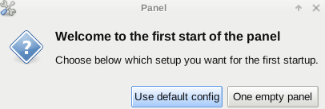

Step 3: Install Yocto Project* on Boards
- Plug in the USB flash drive prepared in
Step 2 into each of the Boards.
- Press F2 on the keyboard to go into the BIOS to boot the board from the USB drive.
- Select "Boot" to run the Yocto Project* OS directly from USB; or select "Install" to install the Yocto Project Linux OS onto storage device of the system.
Note
- By default, the "Boot" option is selected. To select the "Install" option, make the selection immediately after the "GUI of the bootable USB" created in
Step 2 appears.
- The default
user name is "root". No password is required.
- After starting the XFCE image, select the User default config' option when the panel configuration window appears.
